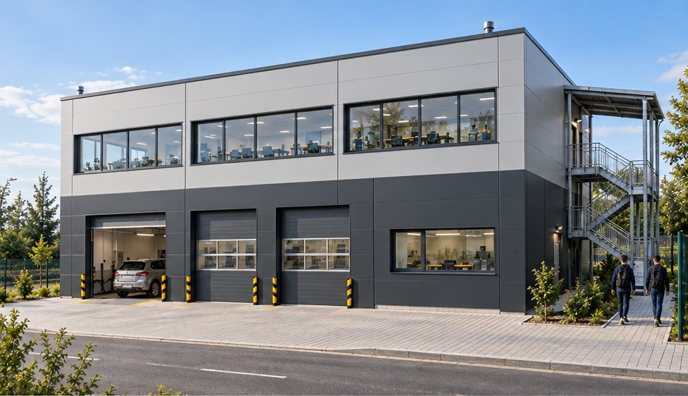

Tur virtual al conceptului P+1 (20 × 20 m) amplasat pe lotul 21, cu parcarea de 300 m² pe lotul 18: linia ITP, service-ul student, laboratorul PCMAI + CCMAI și cele cinci laboratoare de la etaj, echipate după fișele disciplinelor și îndrumarele 2026–2027. Aspectul urmează imaginile concept; în fiecare încăpere imaginea concept corespunzătoare apare în colțul din stânga jos.
Concept arhitectural, nu proiect de execuție. Echipamentele sunt reprezentări la dimensiuni reale, modelate simplificat. Esc eliberează mouse-ul.